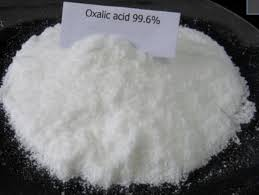

Bethcorps
Other Substances
Lunatech
Methanoic acid
HCOOH
The reactions of ethanoic acid are characteristic of other acids in the monocarboxylic acid series, because
they all possess the carboxyl group. Minor differences and exceptions occur with methanoic acid, the first member of the series.
It can be represented as;
O
//
H-C
\
OH
Manufacture of methanoic acid
Methanoic acid is produced by passing carbon monoxide over heated sodalime at about 2000C at very high temperatures
sodalime
CO(g) → HCOONa(s)
sodium ethanoate
The sodium methanoate produced is distilled with dilute sulphuric acid, to produce methanoic acid2HCOONa(s) + H2SO4(aq) → 2HCOOH (aq) + Na2SO4(aq)
Methanoic acid is also obtained when a mixture of propane-1,2,3-triol (glycerol and oxalic acid ethanedoic acid),(COOH)2 is heated. The acid distils over at about 1200C
Oxalic Acid (ethanedoic acid),(COOH)2
Oxalic acid is a carboxylic acid containing two carboxyl groups. As such it is notna monocarboxylic acid of
the homologous series we have studied so far. However, it is an important di-carboxylic acid and a member of the so-called fatty acids.
It can be represented as.
O O
\\ //
C - C
/ \
OH OH
Oxalic acid is one of the earliest known organic acids. It was originally obtained from a plant called Oxalis acetosella from which it takes its name. It also occurs naturaaly in other plants, icluding sweet potatoes, tomatoes and rhubarb.